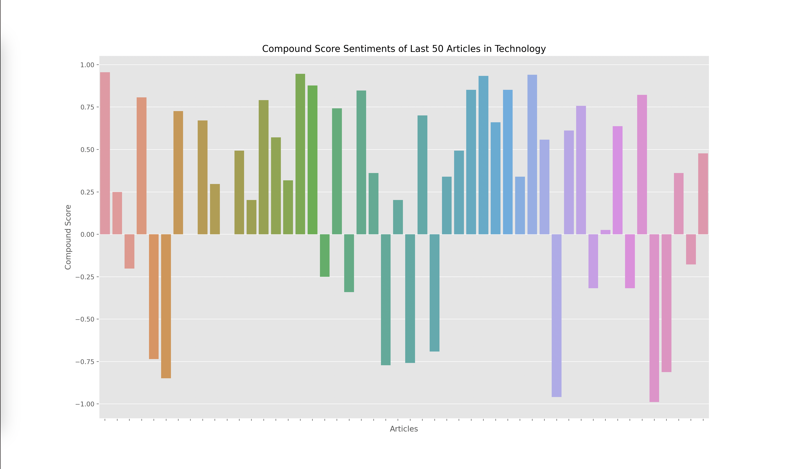
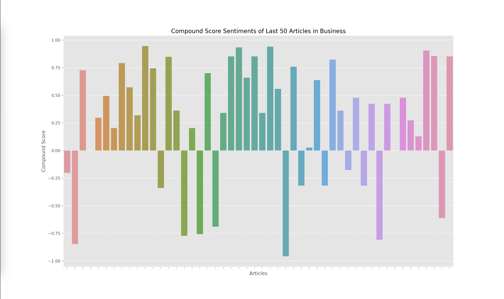
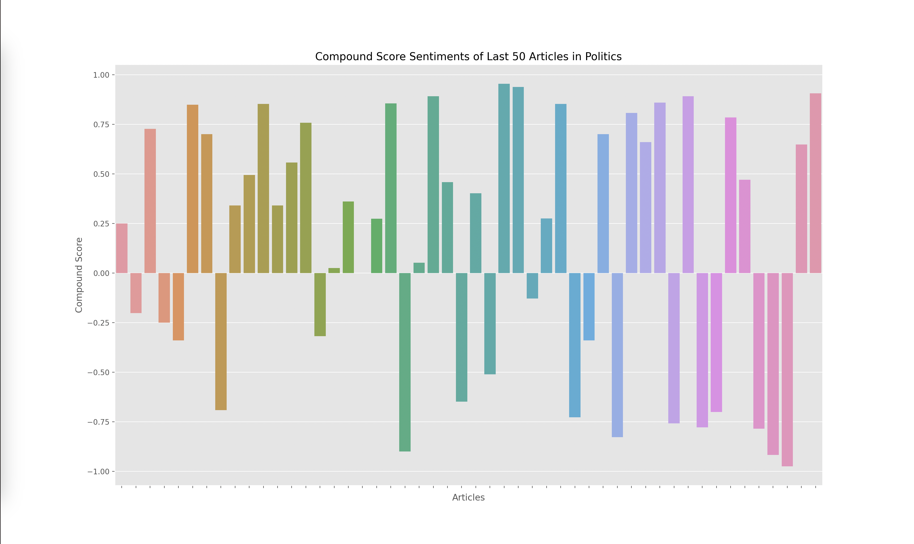
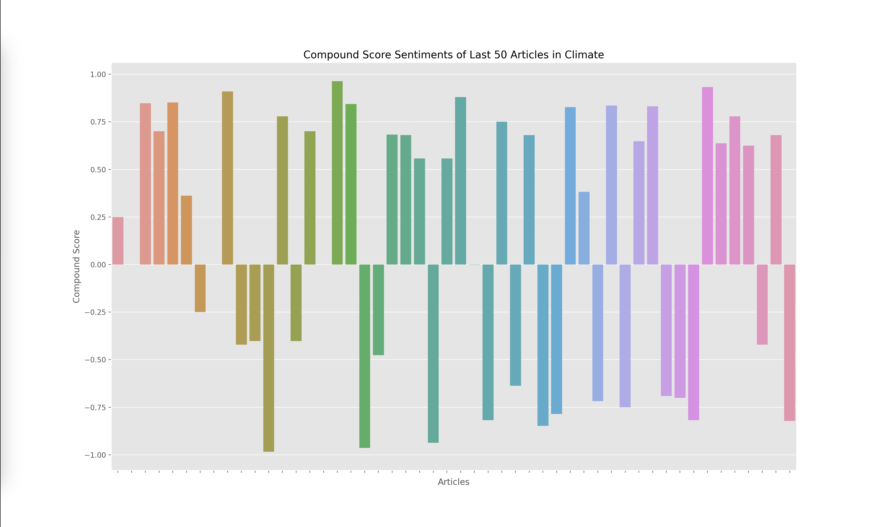
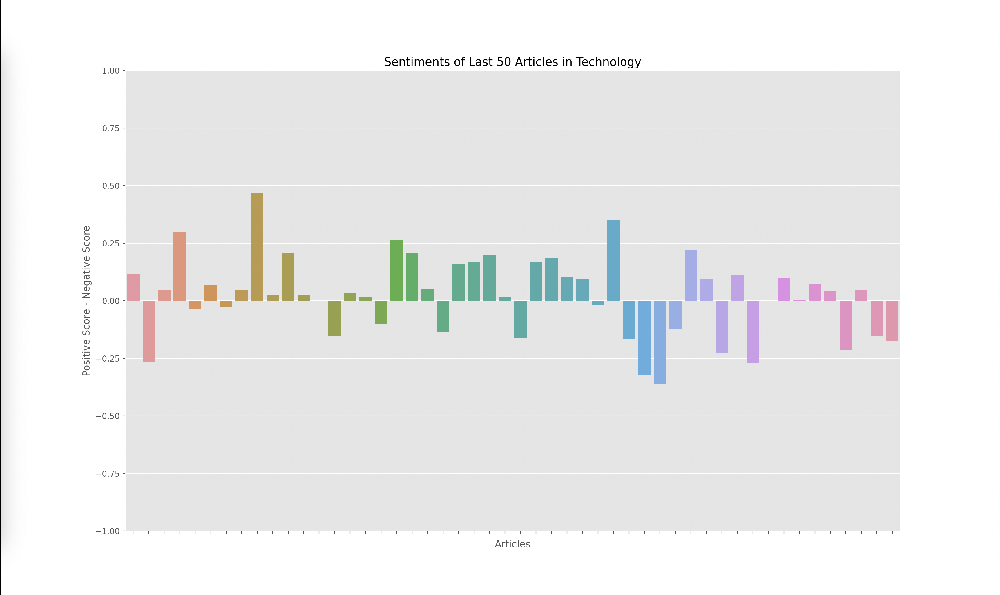
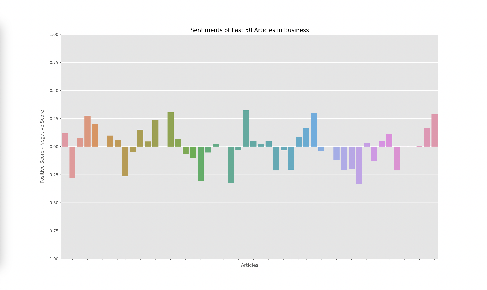
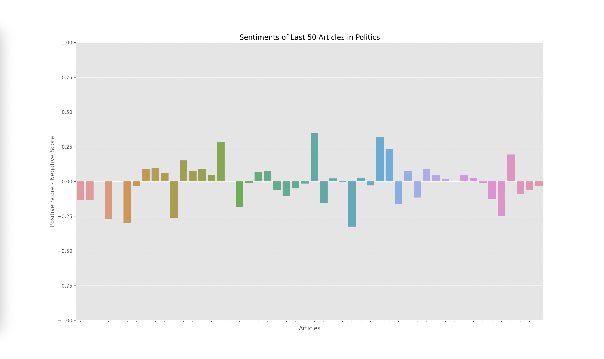
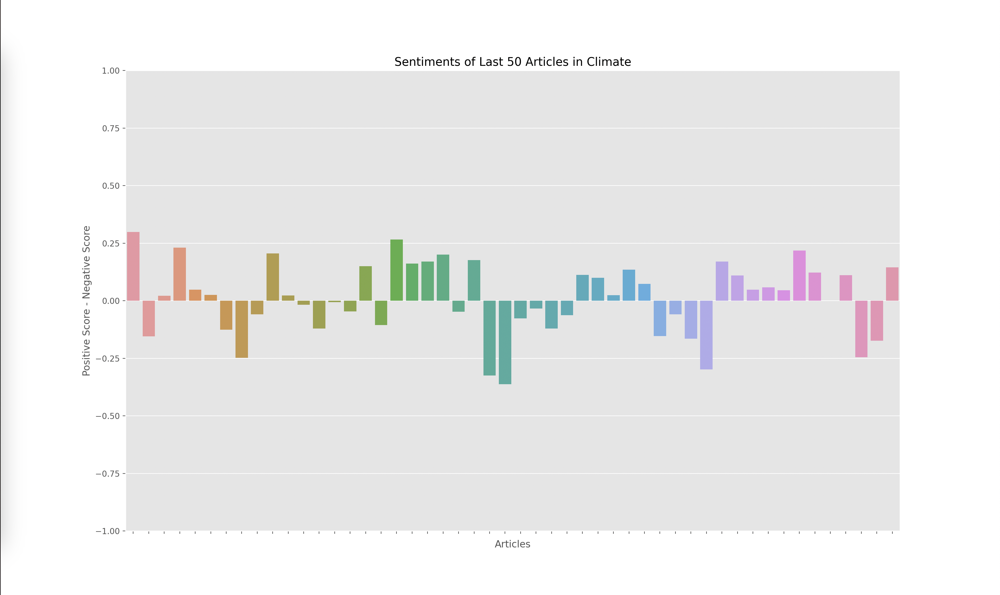

Sentiment Analysis
Title:
Python Developer
Date:
Spring 2024
Skills:
Python, Data Science, Data Visualization
Summary:
While reading the news, I noticed some sentiments towards sectors such as politics were more negative than other sectors such as technology. I developed a program to conduct sentiment analysis on the news articles and effectively visualize the results.
Problem
While reading the news one day, I noticed that some topics seem to have more negative articles written about them when compared to others. For example, when reading the politics section of the New York Times, I noticed that there were many more polarizing and negative articles than when compared to a sector such as technology. I wanted to find a way to confirm my suspicions and show this visually while also developing my skills in sentiment analysis and data analytics.
First Iteration
I first began by exploring the APIs on the New York Times developer page. I settled on the article search API which I could use to query recent articles from each sector. My goals for this program were:
- Query the last 50 articles from the NYT API
- Clean the data by removing unnecessary characters
- Perform sentiment analysis using VADER and NLTK
- Use the results to create visuals
Challenges
Choosing what part of the articles and how to clean the articles proved to be the hardest part of this project. Initially I was going to choose the title of the articles, however, I realized that the title of an article doesn’t always accurately represent the content of the article. I then found that the NYT API has a query where I can retrieve a short description of each of the articles. This provided a concise way to grab the overall sentiment of the article, without having to parse through entire articles.
Cleaning this data was a great learning experience for me since it taught me about the concept of tokenization in NLTK terms. I had to learn how to break down the summary into “tokens” which were then understood by the VADER model. I learned about how tokens could be constructed by words, numbers, and punctuation; I also learned about how these tokens influenced the results of the VADER model in different ways.
Lastly, I had to graph the results from the output of the VADER model, which gave me four scores for each article: negative, positive, neutral, and compound. The compound score is supposed to represent the overall sentiment of the article. I plotted the compound score for each article and ended up with the following graphs for technology, business, politics, and climate:




A score closer to -1 indicates a more negative article while a score closer to 1 indicates a more positive article. Articles around 0 are more neutral articles. These graphs overall make some sense since there does seem to be more polarized and negative articles in politics and climate, whereas technology and business overall seemed to have more of a positive outlook when looking through some of the articles that were being analyzed. However, there did seem to be a skew towards the extremes.
When investigating this problem I noticed that articles with a high neutral score had a compound rating closer to the extremes of -1 and 1 as opposed to a score closer to 0. I looked at the formulas used to calculate the compound score and realized that the way it aggregated the data led to a more extreme sentiment overall. However, I wanted to investigate how the graphs would change given we only looked at the positive and negative sentiments, omitting the neutral sentiment. Thus I decided to graph the y axis with the formula: (positive score - negative score).
The result yielded the graphs below:



